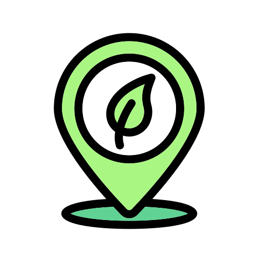

Valores
Confianza
Productos de calidad y asesoría profesional para el éxito de tus cultivos.
Innovación
Compra de insumos y asesoría técnica mediante tecnología accesible.

Cercanía
Entendemos tus necesidades y ofrecemos soluciones personalizadas.

Sostenibilidad
Uso eficiente de fertilizantes y prácticas responsables.
Compromiso
Mejoramos tu productividad y la economía agrícola de la región.